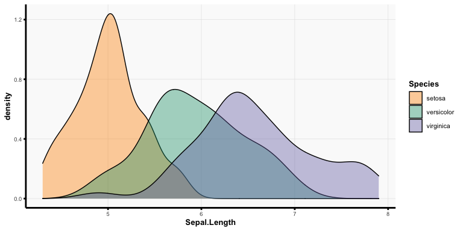
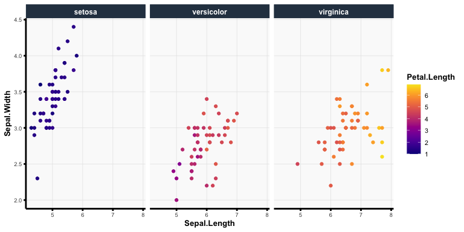

vthemes provides convenient utility functions as well as a clean and modern theme for ggplot2 plots and R Markdown documents.
You can install the development version of vthemes from GitHub with:
devtools::install_github("Yu-Group/vthemes")vmodern ggplot Theme
The vmodern ggplot theme provides a minimalistic but modern style to ggplot2 plots with discrete and continuous color schemes that are heavily built around viridis and the “Dark2” palette from RColorBrewer.
ggplot(iris) +
aes(x = Sepal.Length, fill = Species) +
geom_density(alpha = 0.4) +
theme_vmodern() +
scale_fill_vmodern(discrete = TRUE)
ggplot(iris) +
aes(x = Sepal.Length, y = Sepal.Width, color = Petal.Length) +
facet_wrap(~ Species) +
geom_point() +
theme_vmodern() +
scale_color_vmodern(discrete = FALSE)
vmodern R Markdown Theme
The vmodern R Markdown theme is largely based upon the material design theme from the rmdformats R package but has been adapted to maximize the content spacing, improve tab functionality, and utilize a different color scheme. To use the vmodern theme, set output: vthemes::vmodern in the R Markdown yaml header as follows: